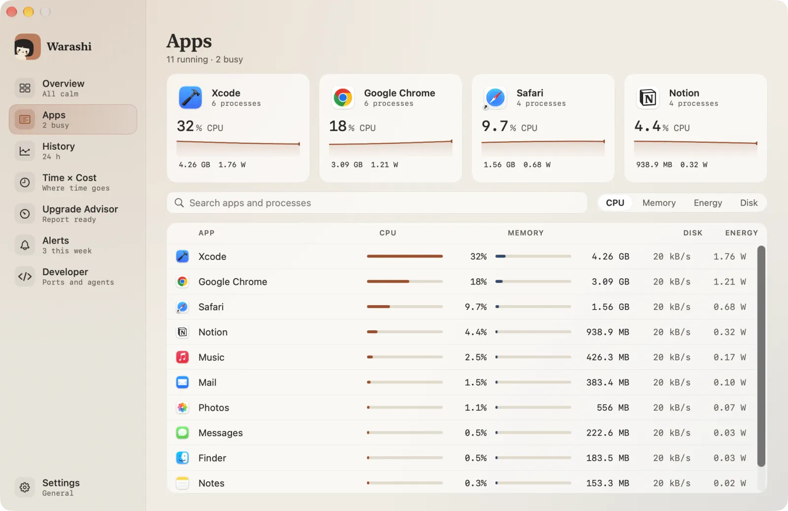
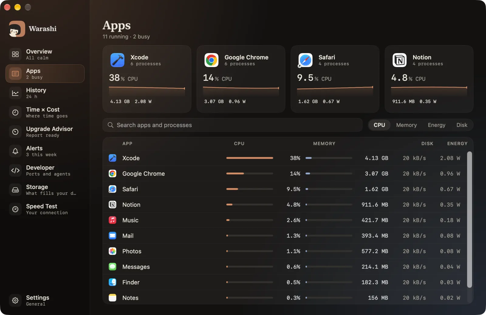
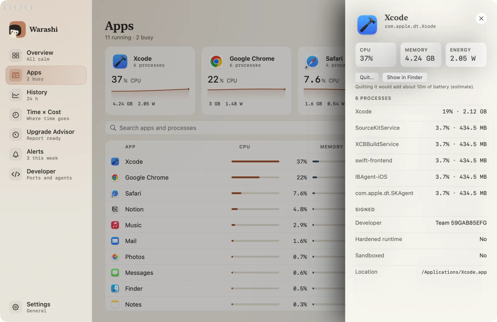
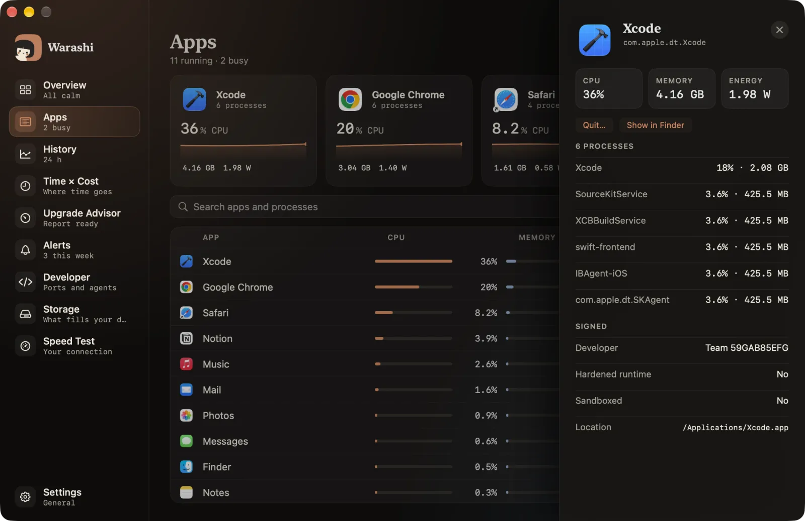

Apps shows what each app costs right now, with its helpers grouped under it (so Chrome is one row, not twenty).
- Open Apps
Choose Apps in the sidebar or press ⌘2. The four busiest apps sit at the top as cards with their last minute; they trade places only when the ranking clearly changes.


- Search or sort
Type in Search apps and processes to find an app or a process by name. Use CPU, Memory, Energy and Disk to sort the list.
- Open an app's drawer
Click an app. Its drawer shows CPU, memory and energy, every process it runs, who signed it (Apple, a developer team or ad hoc), whether it uses the hardened runtime, and where it lives on disk.
Quit… asks the app to close the normal way, so it can save your work. Show in Finder takes you to it. On battery, a line estimates how much time quitting it would add.


- Look at one process
Click a process in the drawer for how it was started: command line, parent, user, start time and launch job. Press Escape or click outside to close the drawer.